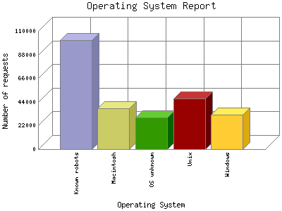

Analog 5.24
Analog 5.24 Report Magic for Analog 2.13
Report Magic for Analog 2.13The Operating System Report lists the operating system your visitors are running for visitors whose browser types you know. Not all browsers provide this information and not all visitors provide browser information, but what is provided, is summarized here.
This report is sorted by number of requests.

| Operating System | Number of requests | |
|---|---|---|
| 1. | Known robots | 101,402 |
| 2. | Macintosh | 38,078 |
| Unknown Macintosh | 37,856 | |
| Macintosh PowerPC | 36 | |
| Macintosh 68k | 186 | |
| 3. | OS unknown | 29,381 |
| 4. | Unix | 46,861 |
| Linux | 46,809 | |
| Other Unix | 46 | |
| BSD | 6 | |
| 5. | Windows | 31,889 |
| Windows NT | 29,109 | |
| Unknown Windows | 2,569 | |
| Windows XP | 169 | |
| Windows CE | 6 | |
| Windows 98 | 12 | |
| Windows 2000 | 24 | |
This report was generated on November 17, 2025 01:09.
Report time frame April 8, 2024 11:04 to November 16, 2025 02:21.
| Web statistics report produced by: | |
| Analog 5.24 | Report Magic for Analog 2.13 |